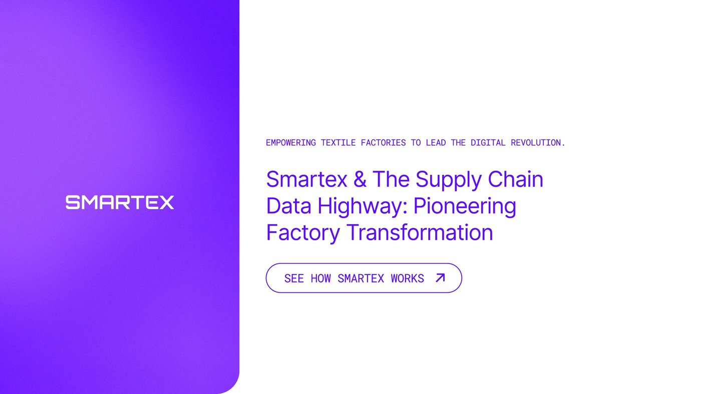
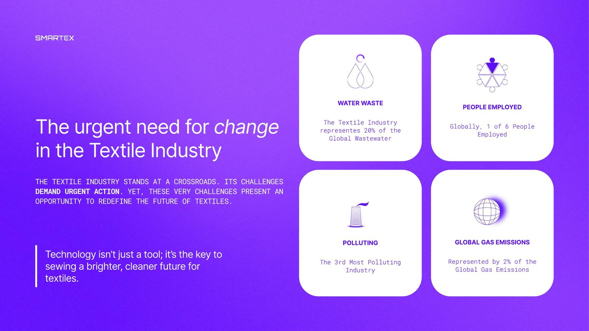
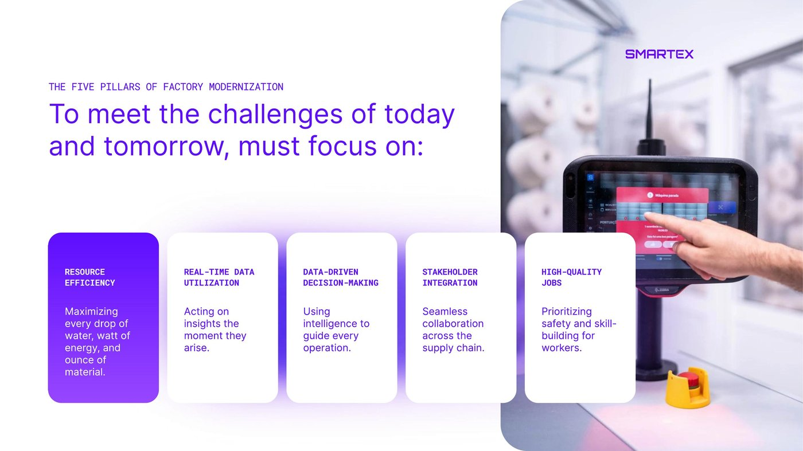
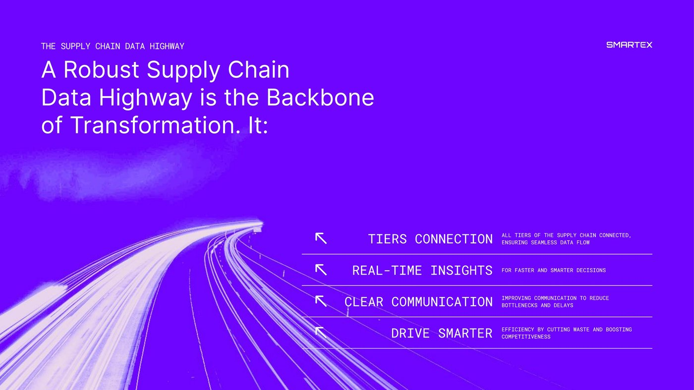
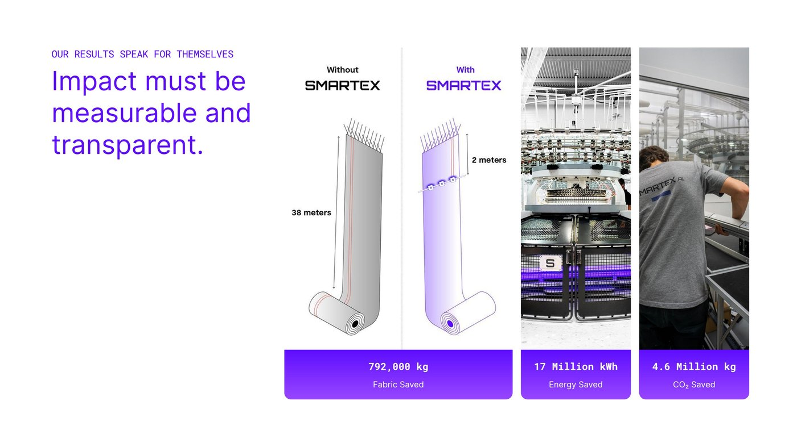
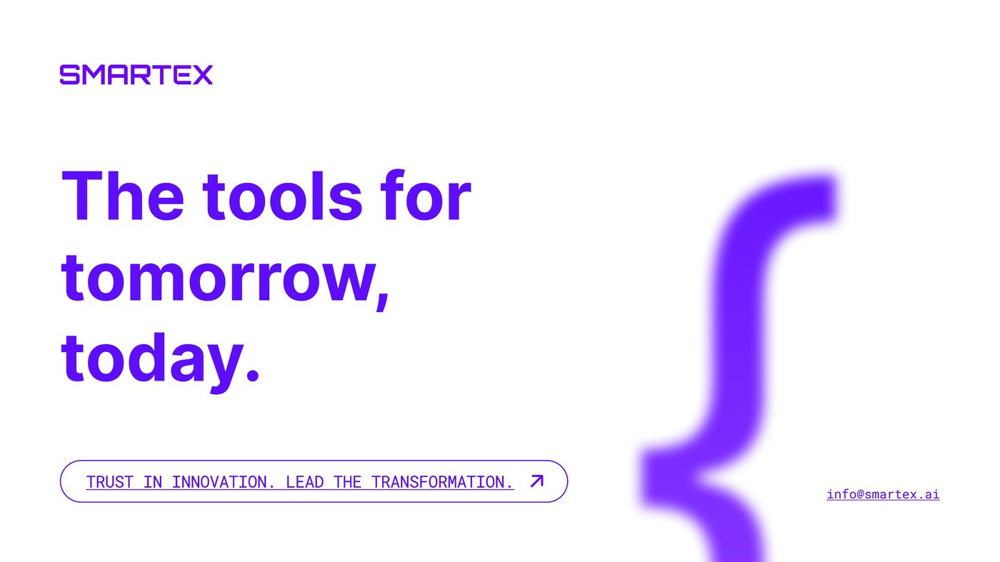

This deck was built as a design and strategy exercise during a hiring process with Smartex.ai, a platform that helps textile factories modernise through real-time data and AI-driven quality control. The brief: design a client-acquisition presentation that makes the case for factory transformation — working entirely inside Smartex's existing brand system, not inventing a new one.
A pitch deck isn't a series of slides — it's an argument, and every slide has to earn the next one.
Before touching layout, I mapped the argument: establish the stakes (the textile industry's real environmental cost), make the pressure personal (price, speed, quality, compliance), introduce the solution as inevitable rather than optional, name the mechanism in one memorable phrase — "the Supply Chain Data Highway" — then close on hard numbers. Design decisions came after the argument was solid, not before.
The task: build a 5–10 slide presentation from excerpts of Smartex's own MTF Report 2.0, aimed at efficiency-focused textile manufacturers — communicating Smartex's "data highway" concept and closing on a clear call to action. Brand constraints were fixed: Inter typeface, primary colour #5E0DFF. Everything else — structure, pacing, visual system — was left open.
Breaking down complex industry information into compelling, specific insight.
Staying on-brand while still showing independent creative thinking.
Pairing clear messaging with engaging, well-paced visual design.
The cover states the thesis in one line — "empowering textile factories to lead the digital revolution" — before anything else competes for attention.

Four blunt statistics — water waste, pollution ranking, employment, emissions — do the persuading before a single claim about Smartex is made.

Naming a framework — Resource Efficiency, Real-Time Data, Data-Driven Decisions, Stakeholder Integration, High-Quality Jobs — turns a list of benefits into something a reader can recall and repeat.

"The Supply Chain Data Highway" gives an abstract data-integration pitch a physical, visual anchor — motion, connection, direction — instead of another diagram of boxes and arrows.

792,000 kg of fabric saved, 17 million kWh of energy saved, 4.6 million kg of CO₂ saved — the deck ends on figures precise enough to feel audited, not marketed.


This is the clearest proof I have of working strictly inside someone else's brand system — no logo to design, no palette to choose — and still shaping how a company argues for itself. That's most of what in-house and agency design work actually is: not starting from a blank page, but finding the strongest possible argument inside constraints that are already fixed.